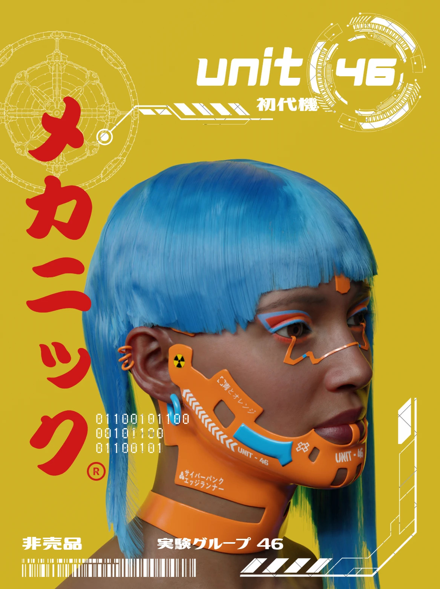
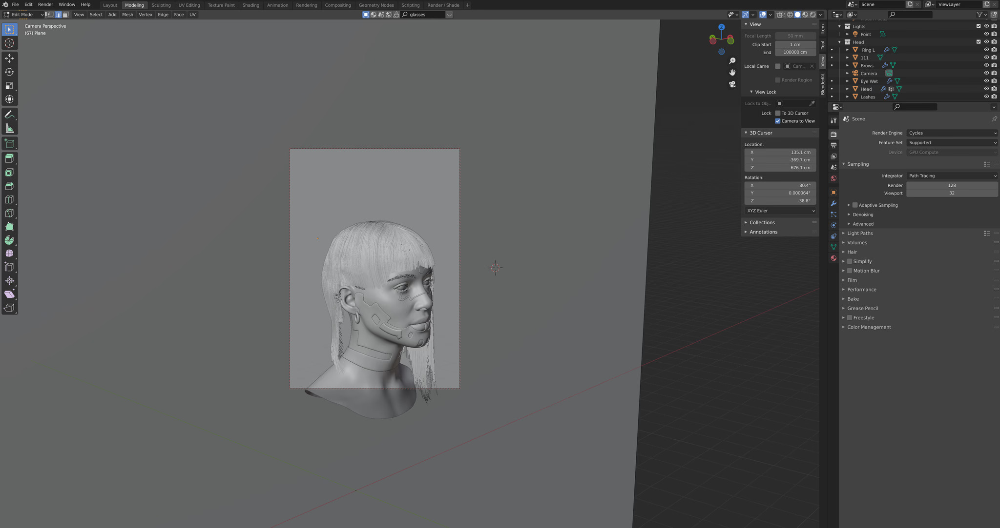
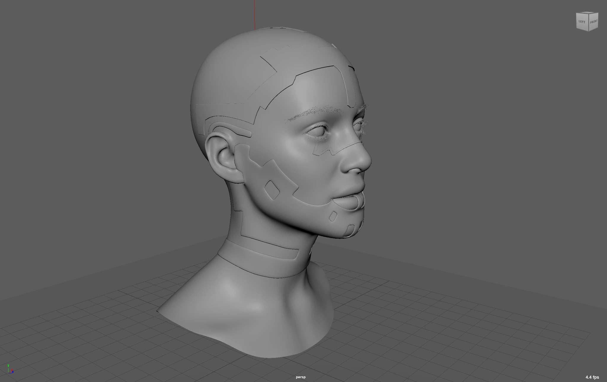

Cyberpunk Character
Design Process
This project started with a base human head model. Using Maya, I added new details such as ear piercings and facial accessories. It was then exported to Blender to design, simulate, and groom the particles for the hairstyle, paint custom materials, and set up lighting for a more cinematic look. Lastly I used the rendered picture in Illustrator to create the final poster.

Challenges
Creating realistic hair was one of the biggest challenges. My early attempts were jagged with unnatural edges. I was able to achieve a more natural look after experimenting with different particle settings and brush sizes. I also learned how to use the stencil brush in Blender, making texture painting a lot easier.

